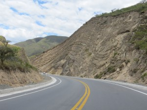

5,783 miles and counting!
We have arrived safely in Cartagena, the northernmost point of our journey in South America. Two days of intensive preparation saw the cars serviced and with repairs carried out, driven to the docks, inspected by Customs, then the Police for drugs, tucked up in a 40’ container and the paperwork completed. Now we have four days in which to rest, do the washing, catch up with friends and family and enjoy Cartagena. I shall also, I hope bring this blog up to date in two bites.
6th April. Quito, Ecuador.
This morning, Ivan, our host at the apartment, very kindly drove to the airport at 03.00 so that River could catch a flight home to North Carolina to catch up with work. Diana, Stan, Amanda and I were ready to leave at 07.30, with Ivan kindly leading the way to ensure that we got back onto the Panamericana Norte. We said farewell as he turned back, no doubt to catch up on sleep, while we continued our journey to the border. We had been fortunate with the traffic as it was a Saturday, and the road quite soon reduced from three to two and then a single lane as we left Quito behind us.
Ivan the guide to the north!
Leaving Quito, led by Ivan
On to the Panamerica Norte, Ivan in the lead
Mugged by a cycle gang, we were passed at 30mph
Vast road works on the main road north are widening the road and stabilising the vast cuttings
A few miles north of Quito we crossed the equator, the exact position unmarked physically, however we had a good GPS signal and made a point of stopping at the indicated place.
Further on we passed a park, containing a concrete globe said to mark the equator, where Clive Ball with Samantha and some years later Eileen and Ken Cooke on holiday were photographed. Unfortunately local road works obscured the entrance to this park until we were passing and the traffic queues would have meant a very long wait to get back and emulate the pictures.
The equator, or at least where our GPS said it was?
I had suggested traditional head shaving for Diana, Amanda and Stan, none of whom had previously crossed ‘The Line’ but they were strangely reluctant!
Feisty to the north and Bertie to the south of the equator as north greets south!
Still at altitude and under the hot sun, we passed through the northern part of volcano alley, the peaks shrouded for the most part in cloud. From Quito, the road fell for the first 30 miles or so and then the first of two significant climbs was encountered. Although not as steep as the entry to Quito, they were long and arduous, slowing us to as little as 12 mph and resulting in a slow grind in 1st or 2nd gear.
We provided the usual entertainment for traffic cops, very amicable but frustratingly frequent
The second climb was steeper in parts and reached 10,800 feet, not quite the high point, which was 11,859 feet, reached two days before on the road to Quito, but still higher than the crossing from Argentina to Chile.
Still in Volcano alley to the north of Quito
The roads were busy and we were constantly passed by faster moving vehicles
Prickly pear
 One should avoid this occuring, I think?
One should avoid this occuring, I think?
Sedimentary rock formations, formerly the sea bed, distorted by tectonic plate movement
We ended the day in Tulcan, within a few miles of Ecuador, a good jumping-off place for the border crossing ahead. By now, even though Tulcan is just below 10,000 feet and we were more used to the altitude, we noticed the effects when carrying cases upstairs or when exerting any energy, but the headaches and feeling very weary are behind us. The one lasting effect is waking very early with the need to drink plenty of water.
I had found the name of a hotel which seemed to fit our needs, secure parking, affordable, including breakfast etc, however the GPS did not recognise the name Tulcan and we had no town map or address for the hotel. By a stroke of good fortune we made our way through the very busy Saturday evening crowds and stopped in the main Plaza, within a few feet of the hotel. It was if we had landed from outer space or were in the emperors new clothes, for within seconds the cars were surrounded by a press of people, probably greater than any we had experienced to date.
Amanda and I went to negotiate with the hotel and left Stan and Diana looking after the cars and fending off the excited mass of Saturday evening shoppers and bystanders. Our negotiations took a little time, asking for rooms away from front of the building and the noisy main street, details of time for breakfast, wifi, parking and payment details, so that when we returned to the cars it was a sight to behold. The sideshow was still going on and now police motorcyclists, taxi drivers and even more people surrounded Diana and Stan. Elbowing through the crowd, I shouted the parking directions above the noise of the crowd to them and we edged our way through the camera-waving crowd and the short distance to the under-hotel parking.
The scrum that resulted from a stop to find the hotel in Pasto
We carried our luggage up four floors to the two rooms and took stock of the situation. This must be what it is like to be famous, we had just experienced the feeling of being public property, well the cars had been the stars of the show, but by extension we were the minders. It is overwhelming and not a little frightening. We always feel a sense of duty, having turned up somewhere with our characterful cars, and it is incumbent upon us as their guardians to try and answer the questions, understand the language, allow babies to be placed upon the bonnet and photographed, gently ask people not to stand on the running boards or open the bonnet, pull on the spare wheel, get into the car uninvited etc. This however was beyond all previous encounters with the public.
An Ecuadorian family were fascinated by the cars when we stopped for a breather half way up the longest incline of the day
The rock formations were always a distraction
Later we walked through the town looking for somewhere to eat and settled upon The Imperial Palace Hotel, which featured Ecuador’s interpretation of Chinese food. Not the greatest meal we have eaten in Ecuador, but it restored us to working order and we went early to bed.
The landscape drew ones eye
7th April. Tulcan, Ecuador.
We shall be sorry to leave Ecuador, it has been a far more interesting, picturesque and friendly country than advertised: advertised, that is, in neighbouring countries. Its overwhelmingly agricultural nature gave it a scale we could relate too, the welcome we received was friendly and sometimes a little too close for comfort, but the scenery stunning, the mountains and volcanoes spectacular and it has social programmes and public services in place to keep its streets clean, its roads under continuous repair and promoting itself as a country to be visited.
Rising early for the border crossing, I had just stepped from the shower when the light went out and I was plunged into darkness, Stan thought I had found the hotel master switch as all the lights went off, but a look through the curtains confirmed the town was in darkness. This inevitably delayed breakfast and so we finally got to the garage later than planned. The slope up from the garage was quite steep. Bertie made it with a bit of a struggle, Dusty just about and Feisty with assistance. Out in the street, despite it being Sunday, the disruption to traffic of getting the cars out of the car park soon produced a near repeat of the crowd scenes from the night before. A hurried departure along the route plotted the night before by Stan, soon had the Panamericana Norte in sight. Reaching it, however, proved more difficult than anticipated. The road dipped and then climbed and turned, in a way that nearly defeated us all in its subtle but severe gradient. Perhaps because they were not properly warmed up, the altitude was nearly 10,000 feet, the petrol not always the octane claimed, or because the engines are out of adjustment due to a combination of all the above – whatever the reason, Dusty had to be pushed to get going and Feisty was pushed by me and a passer-by for a couple of hundred feet up the slope. By the end, our passer-by definitely had had second thoughts about helping strangers and I was in need of a lie-down.
Early morning aerobics, got Dusty away from a stalled start
Feisty needed a longer run
A light drizzle made it rather cold and miserable, but that soon passed and within twenty minutes we arrived at the border, rather unexpectedly, as there had been no previous signage at all. A car park to our right, a low official-looking building to our left and a mass of people and cars and buses al around. I turned in to the car park on the right, immediately aware that it was not the correct place, and then crossed the busy road, the wrong way into a one-way street and parked in front of the single-storey buildings. (7s have a way of being able to cheek their way through the most outrageous manoeuvres). Without signs or any useful information, we were at the mercy of the gaggle of helpful money changers who were hanging about in the hope of business. Fists full of greasy currency notes were brandished in front of us, many languages tried before the message was understood that we did not want to change money, but simply to complete the formalities. Finding the correct building at last, we were quickly and simply signed out of Ecuador and then found a Customs officer who, after a cursory inspection, took away our Temporary Import Document and directed us over the bridge to Colombia.
The Colombian side of the border at Tulcan
More police attention
A rather more visibly-obvious official building had signs suggesting we should not agree to being helped by anyone other than the uniformed staff. Heeding this warning, we were soon through the people-entry process, passports stamped, no need for a Customs declaration and then to another building for the car entry. There being no queue we presented the title document (V5), driving license and passport, so far we had spent less than half an hour and were beginning to anticipate the fastest yet border crossing. The officer asked us to bring our cars to a parking place opposite building and his assistant went off to check Dusty’s chassis number. This was done by rubbing carbon paper onto the plate and then putting sellotape over the number which, when removed and stuck onto the paperwork, provided a permanent record of the image obtained in carbon black.
Troubles began when my passport did not agree with the V5. Christened John, I have been Jack since the age of 15, and almost all documents and my signature have that as my name. Grave doubts were expressed. Fearing the worst, I struggled for an answer until spotting that the signature in my passport agrees with the V5. Phew: panic over. Meanwhile Feisty was then discovered to have an engine number that differed from the V5. This was more serious: Austin 7 engine smugglers are notorious at the Colombian border. Grim faces, as impression after impression was taken, until quite suddenly the whole thing blew over and we had the necessary documents in our hands and could leave! I suspect he got bored and decided it was an SEP (Someone Else’s Problem)
Coffee plantations, studded the hillsides
We left as quickly as was decent in case anybody decided to look again, and began the journey to Ipiales, where we would be able to buy a SOAT (basic road insurance required by law in Colombia) at one of two supermarkets. Entering Ipiales, we found the first supermarket in the town plaza. There was no obvious place to park and two young policemen who were watching an incredibly loud aerobics dance session in the square were unable to help, so we reversed against the traffic flow, turned into a side street and parked while they looked on in mild interest. The supermarket internet-based system was not functioning and so we decided to find the other supermarket. Now the usual problems kicked in. Different opinions were expressed by the helpful locals as to its precise whereabouts and even when they agreed on that, they could not agree on what was the best way to get there. Eventually, following our noses, we circled the town and approached it again, the one-way system being designed to hinder an easy reversal of direction. A short sharp ascent found both Dusty and Feisty unable to make progress, until we spotted an alternative route. This involved reversing a short distance back down the hill and into a side road, in the correct direction but backwards! Unconventional but effective, we decided.
The alternative supermarket lay in a bustling part of town and opposite a heaving sunday Market. I volunteered to stay with the cars, while the others went in search of our SOAT. It was probably one of the most nerve-wracking 90 minutes of my life.
Waiting outside the supermarket for SOAT’s
Surrounded by dozens of people, I constantly moved between the cars, answering questions, giving age, make, year, type, gearbox configuration and all the time trying to prevent people from turning the crank handles, a source of endless fascination. People stood on bits of the cars, lay across the bonnets, thumped the wings and bodies to confirm they were made of something substantial. Children were sat on the radiator shrouds, banging their heels on the radiator cores, babies arranged on blankets and every item poked, prodded and remarked upon. In the middle of this scrum, several very pleasant people tried to ask me sensible questions, sometimes in Spanglish, about where we came from and what we were doing. I produced a visiting card for an English teacher and instantly had 30 hands thrust out for another card.
This level of attention had lasted for well over 90 minutes
All this time, it was cold and slightly drizzling and I was beginning to be in need of a bathroom break. Eventually, the other three appeared from the supermarket, clutching the elusive SOATs and we were able to escape the centre of attention.
The record run of a border was in shreds and we were feeling as if the task ahead was going to be a challenge. We knew from an altitude profile prepared by River, of the next few days’ journey, that this day ended in a climb back to 10,870 feet and, before that, a drop to below 6,000 feet. Since the cars had been not performing well up to now the worry was that we might be getting into Pasto rather late, with no knowledge of where we might stay. We set off and were distracted by the countryside, scenery and almost obligatory police document check whenever we pass a patrol who are bored.
The beautiful Colombian scenery captivated our attention
An immediate change was noted, from Ecuador, distinctive and yet somehow familiar, the field patterns and tree shapes reminded us of Europe and yet the slopes and rock outcrops were definitely South American.
A waterfall
We plugged on, spotting many Renault 4s on the way, made here in Colombia and still very current, and eventually, through sheer desire to get the day done, arrived in Pasto about 17.00. Heading for the centre, we stopped at a very busy filling station, a ploy we often use to ask and find directions to a likely lodging for the night. In the lively melee this nearly always produces, a remarkable thing happened. A woman (whose name, sadly, has escaped us all) complimented us on the cars and asked us where we were going. On hearing that we wanted a hotel she offered to lead us to one she recommended as being new and very good but inexpensive. Waiting patiently for us to conclude buying fuel and paying for it, she made a couple of phone calls and, as we were ready to leave, said that her brother, Jaime, would be along shortly, as he was an antique car collector and would be very interested to see ours. Jaime and several other family members soon arrived in their own cars and hurried introductions were made. Wriggling out of the very busy forecourt, the crowds mainly there to look at the cars, and with Stan directly behind the lead car, we encountered a large roundabout. The evening traffic was dense, and Amanda and I and Diana immediately lost sight of Stan. Guessing the direction, we took off, but in a few moments were overtaken by a gesticulating driver who seemed intent on our following him. Amanda recognised the front passenger as being Maria Eugenia, the sister of our guardian angel, and immediately took off in pursuit, followed by Diana. However, the driver’s hand signals often conflicted with the car’s indicators and we ended up, more by luck than design, passing Stan, who had arrived by a different route, and stopped outside a very nice looking hotel.
In Pasto at the hotel
By now, our convoy had collected another car, a Renault 4, driven by a young man who had stopped to see what all the fuss was about. While I stayed to admire the Renault 4, Amanda, accompanied by the two sisters and the rest of the extended family, went into the hotel to find out about rooms.
Our very welcoming reception, Jamie, wife, sister and brother -in-law and children in the tiled floor garage.
Maria Eugenia decided that the room rate being asked was too high and skilfully negotiated a discount on our behalf. We parked the cars in a splendid garage, where the floor was ceramic-tiled and highly polished, and after many introductions, explanations, congratulations and photographs, we were left dazed and bewildered by the course of events, but armed with a number of new contacts and in the certain knowledge that we had somehow, by complete chance, been found by probably the one person in Pasto who was able to smooth our passage through Colombia and beyond. How that turned out and what the ongoing results were I shall leave until next time, watch this space!
The road looped around the mountainside, clinging to a ledge


{kind=link}
{kind=link}
{kind=link}
{kind=link}
{kind=link}
{kind=link}
{kind=link}
{kind=link}
{kind=link}
{kind=link}
{kind=link}
{kind=link}
{kind=link}
{kind=link}
{kind=link}
{kind=link}
{kind=link}
{kind=link}
{kind=link}
{kind=link}
{kind=link}
{kind=link}
{kind=link}
{kind=link}
{kind=link}
{kind=link}
{kind=link}
{kind=link}
No major repairs? Jolly good. All my admiration having reached the middle of the world. PD: My daughter has given me a small teddy : Doodles sends kind regards to Beanie.
So nice to see your update & riveting reading. Looking forward to the next post. Congratulations on the distance!! Very nice progress.
Hola, que bueno que ya estén por Colombia, hace 3 semanas estuve en Lima en el taller de Javier pero ustedes estaban en Cusco, gracias por su comentario de Arequipa, reciban un abrazo de toda la familia, Rafael.
Given the choice what to read first this morning, the newspaper or your report, the latter took priority by far. Congratulations on reaching this important milestone; enjoy a few restful days at the seaside in Cartagena. It must be exhausting pushing A7s up hills at high altitude. Watching this space avidly and looking forward to the next episode. All best wishes to you all, Steve
Translation for Rafael Lucioni: Hello, glad you are in Colombia, three weeks ago I was in Lima, Javiers workshop, you were in Cusco. Thank you for your comments on Arequipa, big hug from all my family. Rafael.
Jack I have been following all of your journey and am enjoying it to no end. How the hell are you keeping up with all the repair? Be safe aqnd wash your hands. your ol’ ski instructor Ralph.
Glad that all is going well arrive southhampton on Friday after my ”’tiring world cruise” also glad to see that Stan is maintaining the traditions of the ”Yorkshire sandal society” take care you all
Chris
April 24, 2013, Greetings from Colombia
I am very glad to have met, I think they are things of God that has put us in the same way. I hope your visit to our country has been pleasant and have been the best picture of my beautiful Colombia.
I’m very aware of your trip, accompanied by heart.
Hugs and may God continue to bless your way.
hope your trip has been good and you have had a great time! it was good to have met you. hopefully you will soon reach new york.